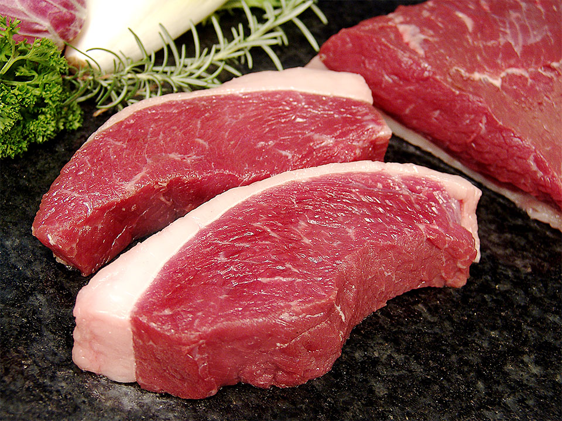

Segredos Para um Bom Churrasco
O Básico que você Precisa Saber
Fuja das peças congeladas. A carne precisa ter um aspecto viçoso, coloração vermelho-vivo e uma camada de gordura.

Tradição dos gaúchos, o churrasco é hoje uma das três grandes paixões nacionais, junto com o futebol e a cervejinha. No entanto, se engana quem pensa que só a carne e a churrasqueira certas são suficientes. Segundo Dilamar Oliveira, especialista no preparo dessa delícia na churrascaria Prazeres da Carne, em São Paulo, "um bom churrasco começa com 12 horas de antecedência". Já o passador de carnes Gutemberg Dias, do Porcão Rio’s, vai além. Diz que "é preciso ficar atento a detalhes, como a escolhados cortes, os temperos e até mesmo o aquecimento da churrasqueira".
Aprenda os segredos desses profissionais e faça um churrasco nota dez.
Os Melhores Cortes
- Os mais indicados são: picanha, fraldinha, contrafilé, alcatra e maminha.
- No caso da fraldinha, da alcatra e da costela, as peças devem ser assadas inteiras. Já a costela deve ir ao forno entre quatro e cinco horas antes de ser levada à churrasqueira, para ficar mais macia.
- O contrafilé pode ser cortado em bifes com cerca de 10 cm de espessura.
- A picanha deve ser assada em peça inteira ou em bifes grossos – ambos com gordura, que não deixa a carne ressecar.
Dicas de Preparo
- Fuja das peças congeladas. A carne precisa ter um aspecto viçoso, coloração vermelho-vivo e uma camada de gordura de, no máximo, um dedo de espessura, para irrigá-la e manter seu sabor.
- Escolha as linguiças mais coradas, evitando as muito esbranquiçadas.
- O ideal é desossar o frango e consumi-lo logo depois de grelhado, para não ficar muito ressecado.
Quantidade Ideal
Em média, calcula-se cerca de 600 g por adulto. Desse total, 150 g podem ser de linguiça, 50 g de frango e o restante de carnes variadas. Crianças com até 7 anos costumam comer, em média, de 150 g a 200 g.
Na Hora de Assar
- O fogo deve estar estabilizado. Para conter as labaredas, nunca jogue água, porque isso faz com que a churrasqueira perca o calor, comprometendo o ponto da carne.
- Com o auxílio de um espeto, espalhe o carvão. Coloque a carne na grelha ou espeto e asse até criar um suco sobre ela. Quando isso acontecer, vire a carne. Quando o suco aparecer também do outro lado, já estará no ponto.
- O espeto deve ficar a 40 cm do fogo, para proteger a carne da alta temperatura e evitar que ela resseque.
Capriche nos Acompanhamentos
Farofa, vinagrete, maionese e saladas devem ser preparados preferencialmente no dia, para garantir o frescor e o sabor.
Temperos Certos
- Sal: O sal grosso é o mais usado. Espalhe-o sobre toda a superfície da carne minutos antes de assá-la. Quando começar a transpirar, significa que o sal aderiu bem – esse é o momento certo de levá-la à churrasqueira. Antes, porém, retire o excesso, apenas esfregando a carne com as mãos.
- Pimenta-do-reino: Para cortes magros, acrescente também um toque deste tempero. Para peças com gordura, deixe a carne de molho de um dia para o outro em uma marinada feita com vinho, ervas, cebola, alho e especiarias.
- Alho: Se gostar do sabor mais forte, a picanha também pode ser temperada com alho. Misture o tempero com sal grosso e passe na peça.
- Cítricos e Especiarias: A carne suína vai bem com sabores levemente adocicados. O lombo de porco pode marinar por quatro horas em suco de laranja ou de abacaxi com pedaços de cravo e canela.
- Versão Especial: Frango combina com quase tudo. Portanto, varie a marinada à vontade. Uma dica para a carne ficar suculenta é colocá-la em uma salmora preparada com uma colher (sopa) de sal para cada xícara de água. Cubra o frango e deixe repousar por até oito horas. Escorra e coloque na brasa. O coração de galinha pode levar um tempero especial, à base de vinho branco, salsa, cebolinha, alho e sal. O mesmo tempero, trocando apenas o vinho por cerveja, realça o sabor do frango.
Bebidas bem Geladas
Churrasco combina com refrigerante, suco ou cerveja bem gelados. Para ficar tudo pronto rapidinho, ponha as latas ou garrafas em um recipiente (balde, bacia, tanque) e cubra com gelo. Junte 100 ml de álcool e 100 g de sal refinado, que retardam o descongelamento. Em dez minutos, as bebidas estarão trincando.
Se tiver muitos convidados, sirva primeiro o frango e a linguiça. Assim, você economiza nas carnes caras.